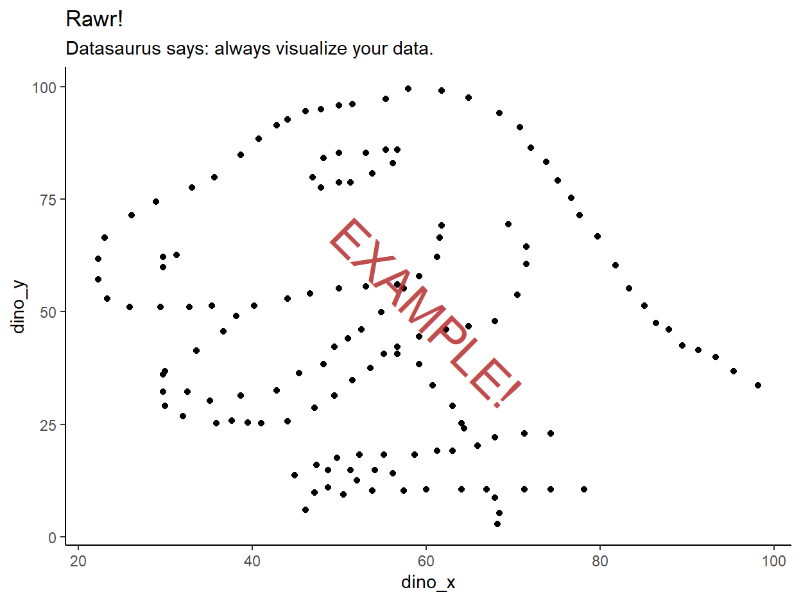
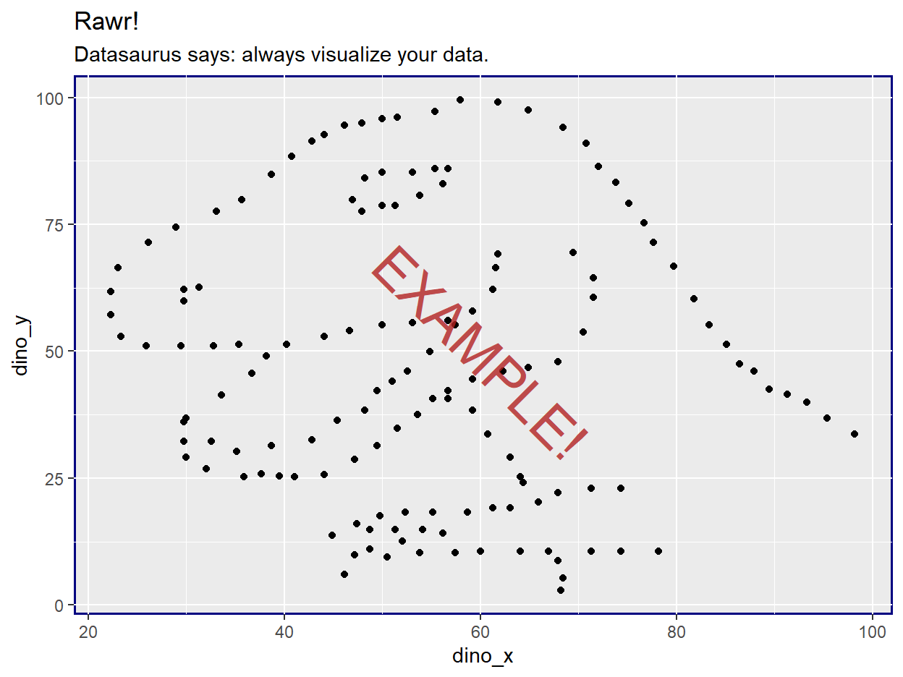

Intro
This interactive worksheet will walk you through a series of mini-challenges designed to demonstrate some of the many aesthetic adjustments you can make to a ggplot2 graph for readability and pizzazz.
After completing this worksheet, learners will be able to:
- Describe many aesthetics that can be modified in
ggplot2plots - search references and function docs to identify techniques for modifying a desired plot aesthetic
- Modify those plot aesthetics using
ggplot2code
The exercises below heavily reference the official ggplot2 textbook. The textbook is not a cookbook for producing any type of plot, but I recommend it to any R users looking to gain first-principles fluency with ggplot2’s design philosophy and how its features are structured. You may find it useful to keep the textbook open in another tab while completing the worksheet.
Similarly, this worksheet does not demonstrate every possible ggplot aesthetic modification (and you really can adjust nearly every feature of a plot with ggplot2!). The worksheet walks through common aesthetic changes I find myself using in my own plots, that I hope will apply to your plotting needs as well.
Worksheet layout
The exercises below assume a general comfort with adjusting ggplot2 code by adding new layers and changing the arguments specified within existing layers.
In particular, some exercises will provide a pre-coded base plot stored in a variable, and ask you to to add layers to the plot in that variable.
Other exercises will ask you to adjust the base code for a plot in order to change its appearance. (If you see the full base code written out in an exercise chunk, that’s your first hint that you will need to alter the code provided!)
Remember that constructing a whole multi-layered ggplot in one call is roughly equivalent to constructing the base layers of that plot, assigning the plot to a variable, and then adding another element to that variable. So these two chunks should produce identical plots:
# Building the whole plot at once
iris %>%
ggplot(aes(x = Species, y = Petal.Length, fill = Species)) +
geom_boxplot() +
theme_bw()
# Building just the base layers, storing in variable
plot_iris <- iris %>%
ggplot(aes(x = Species, y = Petal.Length, fill = Species)) +
geom_boxplot()
# Calling the base plot via variable, then adding layer(s)
plot_iris + theme_bw()
In this worksheet, you can assume the following:
- When a base plot variable is provided in an exercise chunk, you will not need to edit the base plot to complete that exercise. You will only need to add new layers
- The code that creates base plots will always be displayed in a read-only chunk for your reference
- When raw
ggplot2code is provided in an exercise chunk, you will need to edit the base plot to complete that exercise. You may also need to add new layers, but not necessarily
Finally, remember that because of ggplot2’s modular, layered structure, almost all of the aesthetic changes demonstrated in this worksheet can be mixed and matched with each other in a single plot to customize as much as you would like. These exercises mostly show the adjustments one at a time for simplicity, but you can (and should) combine them in your own plots!
The current worksheet
This worksheet generally covers plot annotations and theme elements. The exercises demonstrate various non-data adjustments you can make to improve a plot’s attractiveness and intelligibility, from applying annotations to clarify your data to adjusting plot style with the many arguments of theme().
For more ggplot2 aesthetics practice, check out the first worksheet, covering axis adjustments and color mapping.
Bug reporting and exercise suggestions
If you encounter a bug (incorrect solution, default exercise chunk doesn’t run, etc.) or would like to suggest plot features for additional exercises, please submit an issue on the GitHub repo for these worksheets.
Annotating plots
In this section, we’ll practice placing annotations on plots. If you want to label a specific feature of your data, or otherwise manually add clarifying information on your plot, here are some techniques.
For these exercises, we’ll reuse the plot of US states by area from the first worksheet. (If you are coming to this worksheet from elsewhere, don’t worry! The plot should be mostly self-explanatory.)
plot_us_states_by_area_angled_reordered_labeled <- us_states_by_area %>%
ggplot(aes(x = fct_reorder(state, area), y = area)) +
geom_segment(aes(xend = state, y = 0, yend = area)) +
geom_point() +
scale_x_discrete(guide = guide_axis(angle = 45)) +
labs(x = "US state",
y = "Area (sq mi)",
title = "Alaska is really big")
Drawing reference lines
Often, it’s useful to compare data on a plot to a particular reference value. This value can be 0, if it’s not obvious on the plot, or some other meaningful number. Drawing a reference line at values of interest allows readers to make quicker visual comparisons.
For example, we might like to compare the area of US states to the area of a specific other country. (The US is so big that many individual states are larger than other sovereign nations in the world.)
In this exercise, use geom_hline() to place a dashed horizontal reference line across the graph at 57,321 sq mi, the area of Bangladesh. Set the color of this line to “springgreen4”.
Refer to section 8.3 of the textbook for an example (though the example uses a vertical line instead of a horizontal one, the arguments are very similar), and to the relevant function docs for more information on what arguments geom_hline() takes.
plot_us_states_by_area_angled_reordered_labeledplot_us_states_by_area_angled_reordered_labeled +
geom_hline(yintercept = 57321, linetype = "dashed", color = "springgreen4")Notice how the reference line is drawn on top of the lollipops? This is a direct result of the order in which the plot was constructed. The layers for the lollipop parts (the line segments and the points) were set before the reference line was added, so they are plotted below the reference line. By changing the order in which the layers are added on the plot, we can draw the reference line first, so that the lollipops are drawn on top (and are easier to see).
In the exercise below, alter the order of the layers in the plot construction code to draw the reference line beneath the lollipops (under both the line segments and the points).
us_states_by_area %>%
ggplot(aes(x = fct_reorder(state, area), y = area)) +
geom_segment(aes(xend = state, y = 0, yend = area)) +
geom_point() +
scale_x_discrete(guide = guide_axis(angle = 45)) +
labs(x = "US state",
y = "Area (sq mi)",
title = "Alaska is really big") +
geom_hline(yintercept = 57321, linetype = "dashed", color = "springgreen4")us_states_by_area %>%
ggplot(aes(x = fct_reorder(state, area), y = area)) +
geom_hline(yintercept = 57321, linetype = "dashed", color = "springgreen4") +
geom_segment(aes(xend = state, y = 0, yend = area)) +
geom_point() +
scale_x_discrete(guide = guide_axis(angle = 45)) +
labs(x = "US state",
y = "Area (sq mi)",
title = "Alaska is really big")(For other types of reference lines, geom_vline() draws vertical lines, and geom_abline() draws diagonal lines of any slope, but we won’t use those in this worksheet.)
Adding text labels
It can also be useful to add text annotations in particular locations on top of plots. These can be used to label data points and/or particular regions of a plot.
Text labels can be added in two general ways.
First, text labels that each correspond to an x-axis and y-axis location can be plotted like data. This allows points on a point plot to be individually labeled.
For example, we can label the top of each lollipop in our plot of US states by area with the two-letter postal code abbreviation of that state. It will be redundant with the full state names on the x-axis, but that’s fine for this exercise.
In the exercise below, use geom_text() to plot abbrev, the postal code variable in the US states data, on top of each lollipop point. Note that the x and y locations are already set in the base plot, so the only thing you need to specify in geom_text() is which variable the text labels come from.
Refer to some of the examples in the later half of section 8.2 of the textbook to see how geom_text() is used.
plot_us_states_by_area_angled_reordered_labeled
plot_us_states_by_area_angled_reordered_labeled +
geom_text(aes(label = abbrev))The labels are on the plot now, but they’re unreadable because they’re right on top of the lollipop points, and because they’re overplotting a bit on one another because of their size.
In the exercise below, improve label readability by adding arguments to geom_text() to nudge the text labels up on the y-axis by 30,000 (yes, they must be nudged in actual y-axis units) and setting the text size to 2 arbitrary units.
Refer to the function docs to see what the necessary arguments are called.
plot_us_states_by_area_angled_reordered_labeled +
geom_text(aes(label = abbrev))plot_us_states_by_area_angled_reordered_labeled +
geom_text(aes(label = abbrev), nudge_y = 30000, size = 2)The other method of adding text annotations is to add one-off annotations by manually specifying what you want the label to say and where you want it to appear on the plot. We will use the function annotate() for one-off annotations. Instead of drawing x and y locations from the base plot, annotate() expects manual x-y pairs.
Take the plot we made before with the reference line demarcating the area of Bangladesh. We can add a single text annotation next to the reference line labeling what it refers to.
In the exercise below, use annotate() to add a geom_text-type annotation saying “Area of Bangladesh” with an x-coordinate of 1 (putting it on the far left of the plot) and a y-coordinate of 57,321 (the area of Bangladesh, putting it at the same height as the reference line).
Refer to some of the examples in section 8.3 to see how to specify the arguments for a text annotation.
plot_us_states_by_area_angled_reordered_labeled_annot <- us_states_by_area %>%
ggplot(aes(x = fct_reorder(state, area), y = area)) +
geom_hline(yintercept = 57321, linetype = "dashed", color = "springgreen4") +
geom_segment(aes(xend = state, y = 0, yend = area)) +
geom_point() +
scale_x_discrete(guide = guide_axis(angle = 45)) +
labs(x = "US state",
y = "Area (sq mi)",
title = "Alaska is really big")plot_us_states_by_area_angled_reordered_labeled_annotplot_us_states_by_area_angled_reordered_labeled_annot +
annotate("text",
x = 1,
y = 57321,
label = "Area of Bangladesh")The annotation appears on the plot, but it looks like the center of the text is justified to (1, 57321), causing the line to go through the text, and half of the text to spill off the plot.
We can fix this without changing the x and y-coordinates by changing the horizontal and vertical justification of the annotation relative to its coordinates.
In the exercise below, add arguments to annotate() to set the label’s horizontal justification to be left-justified, and the vertical justification to be bottom-justified. This makes the text appear to start at the left edge of the reference line and sit on top of it.
Refer to some of the examples in section 8.2 of the textbook, as well as the function docs for geom_text(), to identify the correct arguments to set. Note that even though you are calling annotate(), the arguments eventually get passed down to geom_text() when ggplot2 draws the annotation, which is why you have to look in the geom_text() docs for the function argument info.
plot_us_states_by_area_angled_reordered_labeled_annot +
annotate(geom = "text",
x = 1,
y = 57321,
label = "Area of Bangladesh")plot_us_states_by_area_angled_reordered_labeled_annot +
annotate(geom = "text",
x = 1,
y = 57321,
hjust = "left",
vjust = "bottom",
label = "Area of Bangladesh")Finally, in the exercise below, change the geom being called by annotate() from geom_text() to geom_label(), which is an alternate way of drawing text on plots, but with an opaque background. geom_label() is an attractive alternative to geom_text() when the plot behind the text is very noisy.
plot_us_states_by_area_angled_reordered_labeled_annot +
annotate(geom = "text",
x = 1,
y = 57321,
hjust = "left",
vjust = "bottom",
label = "Area of Bangladesh")plot_us_states_by_area_angled_reordered_labeled_annot +
annotate(geom = "label",
x = 1,
y = 57321,
hjust = "left",
vjust = "bottom",
label = "Area of Bangladesh")Note: annotate() is what is used to print the big “EXAMPLE!” stamp on the solution plots in this worksheet!
Changing overarching theme
In this set of exercises, we’ll practice modifying theme elements, or all the “background” non-data pieces, of plots. This allows you to customize the overall look of your plots.
For these exercises, we’ll plot from the Datasaurus dataset. The Datasaurus dataset features a series of points that all have the same descriptive statistics (mean, standard deviation, etc.) but have very different distributions that are apparent upon visualization. The namesake distribution is… a T-rex!
plot_datasaurus <- datasauRus::datasaurus_dozen_wide %>%
ggplot(aes(x = dino_x, y = dino_y)) +
geom_point() +
labs(title = "Rawr!",
subtitle = "Datasaurus says: always visualize your data.")
Since the data on a graph don’t strictly influence theme aesthetic decisions, this will be a fun plot to customize without worrying what the data mean.
First, we’ll apply some pre-made plot themes. ggplot2’s default white-on-gray theme looks classic, but if you prefer different background-grid-axis designs, you may choose to apply an alternate theme. (Or you might just want to choose a non-default theme for the sake of it. That’s fine too!)
Refer to section 18.2 of the textbook for a list of ggplot2’s built-in themes.
In the exercise below, add a theme command to render the Datasaurus plot in ggplot2’s built-in theme that features a white plot background, gray grid lines, and black borders.
plot_datasaurus
plot_datasaurus +
theme_bw()In the exercise below, add a theme command to render this plot in ggplot2’s “minimal” theme.
plot_datasaurus
plot_datasaurus +
theme_minimal()In the exercise below, add a theme command to render this plot in ggplot2’s “classic” theme (designed to look like base R’s default plots).

plot_datasaurus
plot_datasaurus +
theme_classic()Modifying text aesthetics
From this section to the end, we will be adjusting the appearance of specific theme elements. These exercises will demonstrate changing a selection of theme elements, but will not comprise an exhaustive list of every modifiable theme element. For that, refer to section 18.4 of the textbook.
ggplot2 provides a series of element functions that allow you to customize the appearance of theme elements. There are three families of theme elements: for text, line, and rectangle. Each element function takes a series of arguments specific to that type of element. For example, only element_text() takes an argument for font family, while only element_rect() takes an argument for fill color.
In this group of exercises, we will practice customizing text elements using element_text().
Changing text color
In the exercise below, change the color of all text elements on the plot to “chartreuse4”.
Refer to section 18.3 for examples of how to use the various arguments of theme() to adjust their respective theme elements, to the docs for theme() to identify which theme element should be modified, and to the docs for element_text() for specific argument names.
plot_datasaurus
There is a single theme() argument that will modify every single text element in the graph.
plot_datasaurus +
theme(text = element_text(color = "chartreuse4"))In the exercise below, change the color of just the plot title to “chartreuse4”.
Refer to the docs for theme() again to find the correct theme element argument to modify.
plot_datasaurus
plot_datasaurus +
theme(plot.title = element_text(color = "chartreuse4"))Changing fonts
In the exercise below, change all the text on the plot to use the font Courier New.
WARNING: If this technique fails to change the font in a plot on your own machine, that’s okay! You can either try the name of another font you know exists on your computer, or if that still doesn’t work, don’t worry about it. While I’ve tried to show the lightest-weight method here, R plot fonts can get very dicey, and rely on a lot of specific computer settings to work sometimes.
## Warning in grid.Call(C_textBounds, as.graphicsAnnot(x$label), x$x, x$y, : font
## family not found in Windows font database
## Warning in grid.Call(C_textBounds, as.graphicsAnnot(x$label), x$x, x$y, : font
## family not found in Windows font database
## Warning in grid.Call(C_textBounds, as.graphicsAnnot(x$label), x$x, x$y, : font
## family not found in Windows font database
## Warning in grid.Call(C_textBounds, as.graphicsAnnot(x$label), x$x, x$y, : font
## family not found in Windows font database
## Warning in grid.Call(C_textBounds, as.graphicsAnnot(x$label), x$x, x$y, : font
## family not found in Windows font database
## Warning in grid.Call(C_textBounds, as.graphicsAnnot(x$label), x$x, x$y, : font
## family not found in Windows font database
## Warning in grid.Call(C_textBounds, as.graphicsAnnot(x$label), x$x, x$y, : font
## family not found in Windows font database
## Warning in grid.Call(C_textBounds, as.graphicsAnnot(x$label), x$x, x$y, : font
## family not found in Windows font database
## Warning in grid.Call(C_textBounds, as.graphicsAnnot(x$label), x$x, x$y, : font
## family not found in Windows font database
## Warning in grid.Call(C_textBounds, as.graphicsAnnot(x$label), x$x, x$y, : font
## family not found in Windows font database
## Warning in grid.Call(C_textBounds, as.graphicsAnnot(x$label), x$x, x$y, : font
## family not found in Windows font database## Warning in grid.Call.graphics(C_text, as.graphicsAnnot(x$label), x$x, x$y, :
## font family not found in Windows font database## Warning in grid.Call(C_textBounds, as.graphicsAnnot(x$label), x$x, x$y, : font
## family not found in Windows font database
## Warning in grid.Call(C_textBounds, as.graphicsAnnot(x$label), x$x, x$y, : font
## family not found in Windows font databaseplot_datasaurus
plot_datasaurus +
theme(text = element_text(family = "Courier New"))In the exercise below, change all the text to Courier New font (again), and change the plot’s subtitle to appear in bold font face.
## Warning in grid.Call(C_textBounds, as.graphicsAnnot(x$label), x$x, x$y, : font
## family not found in Windows font database
## Warning in grid.Call(C_textBounds, as.graphicsAnnot(x$label), x$x, x$y, : font
## family not found in Windows font database
## Warning in grid.Call(C_textBounds, as.graphicsAnnot(x$label), x$x, x$y, : font
## family not found in Windows font database
## Warning in grid.Call(C_textBounds, as.graphicsAnnot(x$label), x$x, x$y, : font
## family not found in Windows font database
## Warning in grid.Call(C_textBounds, as.graphicsAnnot(x$label), x$x, x$y, : font
## family not found in Windows font database
## Warning in grid.Call(C_textBounds, as.graphicsAnnot(x$label), x$x, x$y, : font
## family not found in Windows font database
## Warning in grid.Call(C_textBounds, as.graphicsAnnot(x$label), x$x, x$y, : font
## family not found in Windows font database
## Warning in grid.Call(C_textBounds, as.graphicsAnnot(x$label), x$x, x$y, : font
## family not found in Windows font database
## Warning in grid.Call(C_textBounds, as.graphicsAnnot(x$label), x$x, x$y, : font
## family not found in Windows font database
## Warning in grid.Call(C_textBounds, as.graphicsAnnot(x$label), x$x, x$y, : font
## family not found in Windows font database
## Warning in grid.Call(C_textBounds, as.graphicsAnnot(x$label), x$x, x$y, : font
## family not found in Windows font database
## Warning in grid.Call(C_textBounds, as.graphicsAnnot(x$label), x$x, x$y, : font
## family not found in Windows font database## Warning in grid.Call.graphics(C_text, as.graphicsAnnot(x$label), x$x, x$y, :
## font family not found in Windows font database## Warning in grid.Call(C_textBounds, as.graphicsAnnot(x$label), x$x, x$y, : font
## family not found in Windows font database
## Warning in grid.Call(C_textBounds, as.graphicsAnnot(x$label), x$x, x$y, : font
## family not found in Windows font databaseplot_datasaurus
plot_datasaurus +
theme(text = element_text(family = "Courier New"),
plot.subtitle = element_text(face = "bold"))Changing text size
In the exercise below, use rel() to make the axis tick labels (on both axes) appear 2x as big as its usual “parent” size. (You can refer to the function docs for rel(), but they don’t say much, as rel() only takes one argument and performs one operation on it.)
plot_datasaurus
plot_datasaurus +
theme(axis.text = element_text(size = rel(2)))Note: Text annotations on a plot (as demonstrated earlier in the worksheet) are not included in text theme elements, so if you have text annotations on a plot and want them to appear the same as title and axis text, you will need to set their appearance arguments separately.
Modifying grid line aesthetics
In the next set of exercises, we will practice modifying grid line aesthetics using element_line().
Changing grid line color
In the exercise below, change the color of all grid lines on the plot to “deeppink”. Refer to the docs for element_line() for specific argument names.
plot_datasaurus
plot_datasaurus +
theme(panel.grid = element_line(color = "deeppink"))In the exercise below, change the color of the major (thicker) grid lines to “deeppink”, and the minor (thinner) grid lines to “lightpink”.
plot_datasaurusplot_datasaurus +
theme(panel.grid.major = element_line(color = "deeppink"),
panel.grid.minor = element_line(color = "lightpink"))Changing grid line type
In the exercise below, make only the minor grid lines dashed.
plot_datasaurus
plot_datasaurus +
theme(panel.grid.minor = element_line(linetype = "dashed"))Removing grid lines
Next, we’ll use a slightly different technique. In the exercise below, use element_blank() to remove all grid lines on the plot. (They aren’t really relevant because we’re plotting a dinosaur anyway.)
plot_datasaurus
element_blank() can be assigned to any argument of theme() to make that element disappear on the graph.
plot_datasaurus +
theme(panel.grid = element_blank())Modifying background (rectangle) aesthetics
In this set of exercises, we will practice modifying the background of the plotting panel (the rectangle in which the data live) and the background of the entire plot (where the title, legend, and axis labels live). These elements are rectangles, governed by element_rect().
Changing inner plot background color
In the exercise below, change the background of the plot panel (the square with the data in it, not the background where the title/axis labels are printed) to the fill color “skyblue”.
plot_datasaurus
If the border color of the plot is changing, but not the internal fill color, remember the difference between the arguments fill and color for changing colors of shapes with inside areas.
plot_datasaurus +
theme(panel.background = element_rect(fill = "skyblue"))Changing full background color
In the exercise below, change the background of the entire plot (the background where the title/axis labels are printed) to the fill color “skyblue”.
plot_datasaurus
plot_datasaurus +
theme(plot.background = element_rect(fill = "skyblue"))Modifying panel border
In the exercise below, change the the border of the panel background (the panel containing the data) to the color “navyblue”, and use rel() to set the border thickness to 2x the parent size.

plot_datasaurus
Yes, panel border is still set using element_rect(), because it’s the outline of the panel rectangle. Remember the difference between the fill and color arguments!
plot_datasaurus +
theme(panel.background = element_rect(color = "navyblue", size = rel(2)))Modifying legend aesthetics
In this final set of exercises, we will modify plot legend aesthetics. Legends have some special theme() arguments allowing them to be moved around the plot, and the background of the legend box can also be customized using element_rect().
First, we need to add a legend to our Datasaurus, by mapping some other variable to an aesthetic like color, point size, or point transparency. Since color changes just look nice, let’s map dino_x to point color as well as x-axis position to create the effect of the dino getting lighter from left to right.
plot_datasaurus_legend <- datasauRus::datasaurus_dozen_wide %>%
ggplot(aes(x = dino_x, y = dino_y, color = dino_x)) +
geom_point() +
scale_color_viridis_c() +
labs(title = "Rawr!",
subtitle = "Datasaurus says: always visualize your data.",
color = "Dino color")
Moving the legend
In the exercise below, move the legend to the bottom of the plot.
Refer to section 11.6.1 for this and the next few exercises on legend positioning.
plot_datasaurus_legendplot_datasaurus_legend +
theme(legend.position = "bottom")In the exercise below, remove the legend from the plot (while keeping the color mapping intact).
plot_datasaurus_legend
This is one of the few theme elements that is removed using a particular argument value, not by setting the argument to element_blank().
plot_datasaurus_legend +
theme(legend.position = "none")In the exercise below, move the legend inside the plot, to the top right-hand corner. You will need to use two arguments in conjunction to make the legend align properly.
Refer to the examples at the end of section 11.6.1 of the textbook.
plot_datasaurus_legend
plot_datasaurus_legend +
theme(legend.position = c(1, 1),
legend.justification = c(1, 1))Note: As far as I can tell, the argument legend.position (when set as a numeric vector with 2 elements between 0 and 1) controls the placement of the center point of the legend box inside the plot panel, while the argument legend.justification controls where the box itself is drawn relative to the center point. If you want to explore this behavior further, try adjusting legend.position and legend.justification separately. For most uses, though, as long as those two arguments are set to the same value, in-panel legend placement should work fine.
Making the legend box transparent
The plot from the last exercise illustrates that the legend box does not have a transparent background, but instead the legend background is the same color as the plot background by default. In cases where the legend is plotted over something else, or the background is otherwise not the default color, it’s usually easiest to improve plot appearance by removing the legend background to show the plot beneath.
In the exercise below, using the same technique from a previous exercise in the grid line aesthetics section, remove the legend background from the plot. (Leave the legend position/justification where it is, though!) Refer to section 18.4.3 of the textbook for which theme() argument controls the legend box background.
plot_datasaurus_legend +
theme(legend.position = c(1, 1),
legend.justification = c(1, 1))The legend background is indeed one of the elements that can be removed from a plot with element_blank().
plot_datasaurus_legend +
theme(legend.position = c(1, 1),
legend.justification = c(1, 1),
legend.background = element_blank())